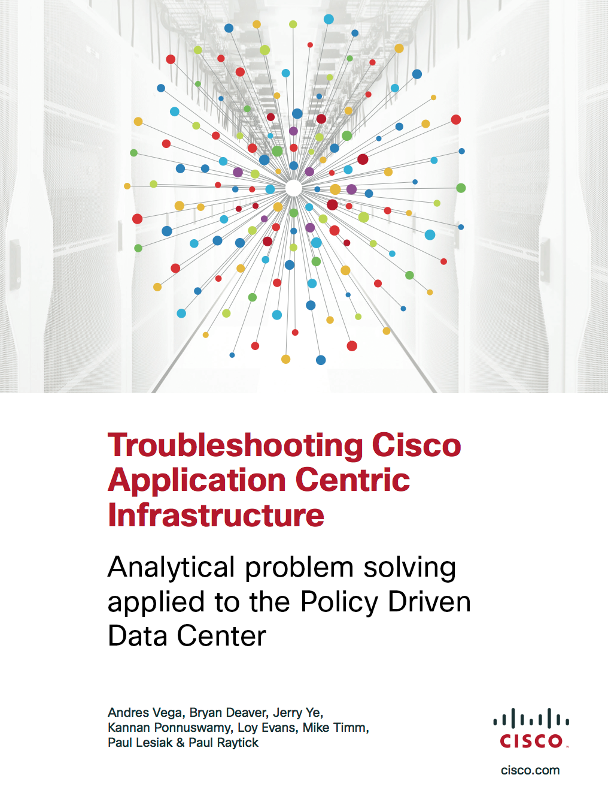

Troubleshooting Cisco Application Centric Infrastructure¶
{kind=link}
Table of Contents:
- Preface
- Application Centric Infrastructure
- ACI Policy Model
- Abstraction Model
- Everything is an Object
- Relevant Objects and Relationships
- Hierarchical ACI Object Model and the Infrastructure
- Infrastructure as Objects
- Build object, use object to build policy, reuse policy
- REST API just exposes the object model
- Logical model, Resolved model, concrete model
- Formed and Unformed Relationships
- Declarative End State and Promise Theory
- Troubleshooting Tools
- Troubleshooting Methodology
- Sample Reference Topology
- Troubleshooting
- Initial Hardware Bringup
- Fabric Initialization
- Application Policy Infrastructure Controller (APIC) High Availability and Clustering
- Firmware and Image Management
- Faults / Health Scores
- REST Interface
- Management Tenant
- Common Network Services
- Unicast Data Plane Forwarding and Reachability
- Policies and Contracts
- Bridged Connectivity to External Networks
- Routed Connectivity to External Networks
- Virtual Machine Manager and UCS
- L4-L7 Service Insertion
- ACI Fabric Node and Process Crash Troubleshooting
- APIC Process Crash Troubleshooting
- Appendix